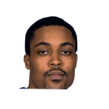

Strickland, on hand to promote Budweiser's Lottery-themed beer giveaway Thursday, smiled when he was asked if he'd advise Irving during his free agency.
“He has a great father, one of my best friends (Drederick Irving). So he's in great hands,”

3 quotes from Rod Strickland about 3 other people around the NBA, newest first. Each one links to its original source.
Strickland, on hand to promote Budweiser's Lottery-themed beer giveaway Thursday, smiled when he was asked if he'd advise Irving during his free agency.
“He has a great father, one of my best friends (Drederick Irving). So he's in great hands,”
“He hadn't shot it well (34 percent on threes his one season at Florida). I'm watching him warm up and saying, ‘I love his shot. But in games he hasn't shot it well.'But you could see he was a great shooter. He gets to the league and it's lights out. That's how I look at Trae Young. When he's open he'll be taking quality shots and making quality shots.”
Young shot just 36 percent on threes his one season at the U. of Oklahoma, though Strickland believes Young was forced into so many questionable shots because he was required to be the team's offense.
“I remember sitting on the bench at Kentucky and watching Bradley Beal,”